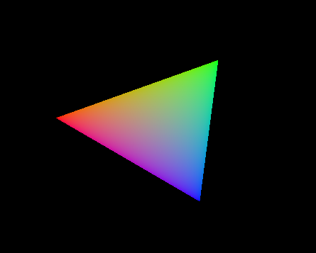
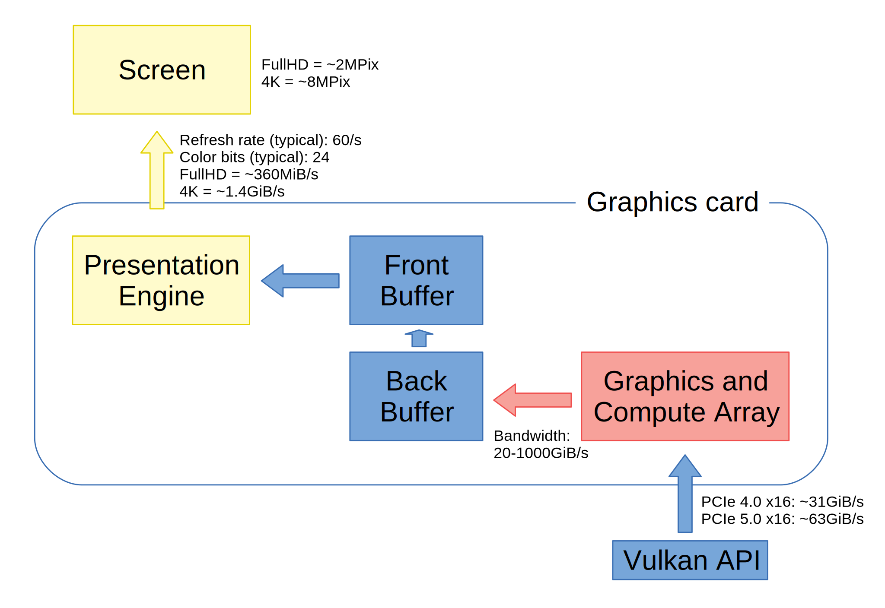
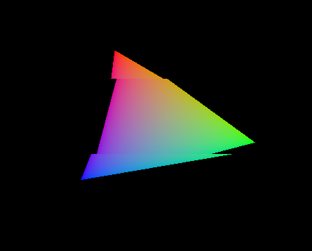
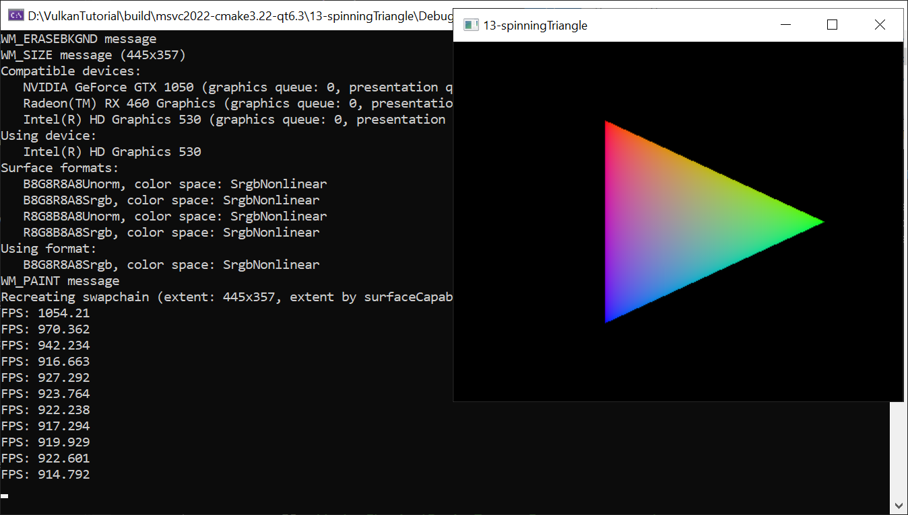

Dnes rozšíříme náši prezentaci do okna o možnost nastavit PresentMode, tedy prezentační režim. Zkusíme prezentovat jak na frekvenci obrazovky, či pouze když vznikne potřeba, tak i na maximum FPS.
Prezentační režim (present mode) udává, jak se námi vyrendrované obrázky dostanou na obrazovku. Doposud jsme používali režim vk::PresentModeKHR::eFifo. Jak již název tohoto režimu napovídá - First In, First Out - vyrendrované obrázky se vkládají do fronty a ze druhého konce fronty jsou zase vybírány a posílány na obrazovku tou rychlostí, jakou obrazovka zobrazuje, tedy obyčejně 60 snímků za sekundu.
Než půjdeme k výkladu, můžeme si stáhnout zdojáky, zkompilovat si je a zkusit spustit. Nově aplikace podporuje několik command-line parametrů, jak zjistíme zadáním --help na příkazový řádek:
13-spinningTriangle usage:
--help or -h: usage information
--on-demand: on demand window content refresh,
this conserves computing resources
--continuous: constantly update window content using
screen refresh rate, this is the default
--max-frame-rate: ignore screen refresh rate, update
window content as often as possible
Pokud specifikujeme --on-demand, bude se rendrovat nový trojúhelník vždy, když přijde nový požadavek na přerendrování okna. Při každém novém rendrování pak bude trojúhelník pootočen o šest stupňů. Tedy za šedesát snímků udělá trojúhelník jednu otáčku. Můžeme zkusit roztahovat a zmenšovat okno a podle toho, zda se trojúhelník točí nebo stojí poznáme, zda okenní systém provádí pouze scale současného obrázku, nebo zda opravdu přišel nový požadavek na přerendrování okna, při kterém znovu vytváříme swapchain a znovu rendrujeme scénu.
Pokud nespecifikujeme žádný parametr nebo specifikujeme --continuous, spustí se aplikace s kontinuální animací trojúhelníku, jak můžeme vidět po kliknutí na následující obrázek:
V konzoli pak vidíme každé dvě vteřiny výpis aktuálního FPS (Frames Per Second), tedy počet vyrendrovaných snímků za vteřinu. Tato hodnota je na většině dnešních počítačů rovna šedesáti. A to je přesně obrazovková frekvence většiny dnešních zobrazovacích panelů. Občas se setkáme i s vyššími hodnotami, například u specializovaného nebo herního hardware. Pak můžeme vidět například i 120 nebo 144 snímků za vteřinu.
Třetí možnost specifikujeme uvedením --max-frame-rate. Po spuštění vidíme trojúhelník, který se doslova může přetrhnout rychlostí rotace. Každé dvě sekundy pak v konzoli vidíme FPS se závratnými hodnotami podle výkonu a podle možností dané grafické karty.
Tím jsme si vyzkoušeli naši aplikaci. V dnešním díle zbývá probrat základní funkční bloky systému, pak probrat prezentační režimy a nakonec projít zdrojáky.
Celý rendrovací a zobrazovací systém může v jednoduchém případě vypadat jako na následujícím obrázku:
Žlutě jsou zobrazeny části vztahující se k zobrazování, načervenalou barvou části mající úzký vztah k výpočetní síle grafické karty a modrou barvou je zobrazeno vše ostatní.
Začneme od obrazovky a presentation engine. Typická obrazovka počítače a často i notebooků má rozlišení FullHD (1920x1080) a mnoho novějších počítačů i 4K UHD (3840x2160). Různých rozlišení samozřejmě existuje obrovské množství a je pravděpodobné, že právě vy můžete mít jiné. To ale nic nemění na tom, že FullHD a 4K UHD jsou v době psaní tohoto článku (léto 2022) časté rozlišení obrazovek.
Na každé obrazovce snadno spočítáme počet pixelů. Obrazovka FullHD (1920x1080) nám dá zhruba 2 miliony pixelů a 4K UHD obrazovka asi 8 milionů. Při 24-bitových barvách, což je jeden bajt na každou z RGB složek, to dává zhruba 6 a 24 megabajtů dat jednoho snímku na obrazovce. V nejjednodušším případě se snímek posílá na obrazovku po pixelech od levého horního rohu. Dál se pokračuje pixely na nejhornějším řádku až do pravého horního rohu. Pak se vše zopakuje postupně pro každý řádek o jedno níže až po pravý spodní roh obrazovky. Tím je odesílání snímku dokončeno. Na typický LCD panel dnes posíláme nejčastěji 60 snímků za sekundu, což je obnovovací frekvence obrazovky, anglicky screen or display refresh rate. Použijeme-li jednotku hertz, pak říkáme, že obnovovací frekvence obrazovky je 60Hz.
Při 60 snímcích za sekunkdu dostáváme datový tok 360MiB/s pro FullHD rozlišení a 1.4GiB/s pro 4K datový proud. Toto množství dat nám u klasického počítače protéká kabelem k obrazovce, ať už se jedná o rozhraní DisplayPort či HDMI či něco exotického. V tomto článku již budu vynechávat všechna historická rozhraní jako VGA connector, DVI a další, z nichž mnohá jsou ještě analogová a budu předpokládat jedno z moderních digitálních rozhranní.
Tento datový tok, snímek za snímkem, do obrazovky odesílá jednotka, kterou bychom ve vulkaní terminologii nazvali Presentation Engine, v mnoha diskuzích zkráceně pouze PE. Presentation engine čte data z bufferu a posílá je na obrazovku. Buffery na našem obrázku máme dva, ale obecně jich může být libovolný počet od jednoho nahoru. My máme dva, tedy double buffering, který jsme si už zmínili v jedenáctém díle pojednávajícím o swapchainu. Máme tedy dva buffery: front buffer a back buffer, česky přední a zadní buffer. Přední je obyčejně něco, co jde vidět, protože je to v předu, a zadní něco, co je často skryto či zasunuto a vidět nejde.
Prezentační engine tedy čte z front bufferu a zobrazuje jej na obrazovce, zatímco rendrování je prováděno do back bufferu. Až je rendrování snímku dokončeno, jsou oba buffery prohozeny a prezentační engine začne zobrazovat obsah nového snímku.
Samotné rendrování začíná u rozhraní Vulkan, které přes driver a následně nejčastěji přes PCIe sběrnici posílá práci grafické kartě. Grafická karta pak práci zpracovává za pomoci mnoha součástí, které bychom mohli souhrnně nazvat Graphics and Compute Array, česky snad grafické a výpočetní jednotky, či jen výpočetní jednotky, ať už se na nich počítá grafika či výpočty. Tyto výpočetní jednotky komunikují s grafickou pamětí, odkud čtou a zapisují data, a kam se do back bufferu zapisuje i výsledný obrázek. Na rozdíl od PCIe sběrnice, kde máme k dispozici dnes většinou asi 15-60GiB/s podle verze PCIe, propustnost grafické paměti se u nynějších posledních generací diskrétních grafik pohybuje od 100 do 1000GiB/s, tedy opravdu hodně, aby paměť sytila hladové výpočetní jednotky grafické karty, které dnes v hi-endu atakují počet deset tisíc a v low-endu diskrétních grafik zřídka klesají pod pětistovku.
A právě tento výkon může budit otázku: Co když výpočetní jednotky chrlí obrovské množství hotových obrázků, ale prezentační engine jich chce zobrazit pouze 60 za sekundu? Nebo: Co když se výpočetní jednotky zadýchávají na velmi složité scéně a zvládnou vyrendrovat pouze 50 snímků za sekundu? Co v takovém případě udělá prezentační engine, když musí poslat na obrazovku snímků 60? To vše nám zodpoví prezentační režimy.
Vulkan definuje několik prezentačních režimů specifikovaných v enum class vk::PresentModeKHR. My si je představíme postupně. Začneme od toho nejjednoduššího:
Prezentační režim eImmediate značí to, co obsahuje v názvu, tedy okamžité přepnutí. Tedy ve chvíli, kdy požádáme presentation engine o zobrazení daného bufferu dojde k okamžitému přepnutí bez zbytečného otálení na tento nový buffer.
V našem případě bychom tedy dorendrovali obrázek do back bufferu, požádali o prezentaci back bufferu a okamžitě bez dalšího čekání by došlo k prohození back a front bufferu.
Okamžité prohození má jednu krásnou výhodu: téměř nulovou latenci. Jakmile je tedy snímek dorendrovaný, ihned jej můžeme poslat na obrazovku. Je zde ale také jedna obrovská nevýhoda zvaná anglicky tearing, česky roztržení či roztrhávání obrazu. Obrazovka již zobrazila část jednoho snímku, pak ale byl náhle obraz přepnut a zobrazí se druhá část, ale z následujícího snímku. Počet přepnutí může být více během jednoho snímku. Tento efekt může být okem postřehnutelný jako horizontální zlom ve snímku. Příklad je na následujícím obrázku:
Trojúhelník je zobrazován v jedné poloze, pak je ale náhle přepnuto na snímek, kde je již trojúhelník trochu více pootočený. To se na tomto snímku stane dvakrát.
Efekt tearingu může být eliminován, pokud nepřepínáme snímky ihned uprostřed jejich přenosu, ale počkáme, až se vždy dokončí jeden celý snímek. Historicky se tento okamžik nazývá vertical blanking interval nebo vertical blanking period, zkráceně vertical blank či v-blank. Česky pak vertikální zatemňovací interval. Název pramení z toho, že staré CRT televize a monitory potřebovaly po dokončení snímku přesunout paprsek z pravého dolního rohu obrazovky do levého horního rohu, kde se pak zase začínal vykreslovat další snímek. Aby nebyla na obrazovce udělána diagonální čára, byl paprsek "zatemněn". A proč vertikální? Protože paprsek se přesouval i po každém řádku z prava do leva a tam se jednalo o horizontální zatemňovací interval. U nás jde paprsek i vertikálně, proto vertikální zatemňovací interval. V čase vertikálního zatemňovacího intervalu je předchozí snímek kompletní a následující ještě nezačal. S trochou nadsázky se tedy jedná o dobu "temna", kdy se nic nového na obrazovku nekreslí a neposílá. V tuto chvíli tedy může presentation engine bezpečně přepnout front a back buffer, aniž by došlo k jakémukoliv vizuálnímu efektu tearingu. Synchronizovat věci tak, aby byly prováděny během vertical blank se pak nazývá vertikální synchronizace, zkráceně VSync. Jinými slovy VSync brání změnám do dat prezentovaného snímku, dokud není celý snímek přenesen na obrazovku.
A toto přesně dělá režim eFifo, který kompletně zabraňuje tearingu. Pokud je zde nový snímek, který čeká na prezentaci, tak počká na v-blank, a pak se prohodí front a back buffer.
Pokud bychom měli mnoho bufferů, ne jen dva, tak v pořadí, v jakém je pošleme do presentation engine pro prezentaci, v tom pořadí budou jeden po druhém vždy v čase v-blank nastaveny jako aktuální snímek a následně odeslány k zobrazení na obrazovce. Pokud bychom jich poslali naráz šest, trvalo by skoro 100ms, než by se všechny na 60Hz obrazovce vystřídaly.
A toto je nevýhoda režimu eFifo, tedy že snímky čekají ve frontě a nabírají tak zpoždění, nebo-li latenci, či lag. V případě double bufferingu, pokud je fronta plná, bude latence dalšího snímku než začne být odesílán na obrazovku 16.6 až 33.3ms na 60Hz obrazovce. To platí samozřejmě jen, pokud se veškerý hardware a software bude chovat přesně tak, jak očekáváme.
U tripple bufferingu ve stejném případě pak plná fronta znamená latenci 33.3 až 50.0ms.Prezentační režim eMailbox odstraňuje problém čekání, který jsme si uvedli u režimu eFifo. Jeden snímek může být zobrazován, druhý naplánován k prezentaci, ale když naplánujeme třetí snímek, druhý je zahozen a nahrazen třetím. Ve frontě tedy vždy čeká jen poslední naplánovaný snímek k prezentaci. Čeká až do v-blank, kdy bude nastaven jako aktuální snímek a následně bude odeslán na obrazovku.
Režim eMailbox tedy také čeká na v-blank a nedochází k tearingu. Pokud bychom analyzovali maximální dobu čekání, než začne snímek být odesílán na obrazovku, tak v případě plné fronty jakýkoliv další snímek nebude čekat déle než 16.6ms a pokud snímek odešleme v ten správný okamžik, může být zpoždění rovno téměř nule. Opět zvažujeme jakýsi ideální modelový hardware a software.
Výhoda mailboxového režimu je tedy velmi krátká latence a zároveň absence tearingu. Nevýhoda je často velká zátěž výpočetních prostředků, neboť mailboxové aplikace často rendrují na velmi vysokých FPS, přičemž jen 60 snímků z nich se na 60Hz obrazovce opravdu objeví. Na desktopech se pak trochu protočí větráky grafické karty a trošku více roztočí elektroměr. Na mobilech je situace závažnější. Horký mobil v ruce a rychleji vybitá baterie není obyčejně to, co bychom na mobilní aplikaci měli rádi.
Pokud je spotřeba energie nebo vysoké využití výpočetních prostředků problém, buď je možné nějakým postupem snížit či korigovat počet rendrovaných snímků, nebo se občas jednoduše volí eFifo režim, který omezí počet rendrovaných snímků na tolik, kolik zvládne obrazovka, tedy nejčastěji 60 za sekundu.
Občas se stává, že je scéna velmi rozsáhlá a výkon grafické karty sotva stačí na 60 vyrendrovaných snímků za sekundu, přičemž uvažujeme opět 60Hz obrazovku. Při použití režimu eFifo a double bufferingu se může objevit problém. Pokud grafická karta zvládne scénu vyrendrovat 60-krát za sekundu a ještě ji zůstane drobná rezerva, bude vše vpořádku a na obrazovce uvidíme 60 vyrendrovaných snímků. Pokud ale výkon poklesne pod 60 snímků za sekundu, karta nestihne včas snímek dokončit a naplánovat před jeho v-blank, ale až těsně po něm. Tento snímek tedy bude čekat na další v-blank, aby byl zobrazen. A další smůla je v tom, že současný snímek se stále zobrazuje, takže do něj ještě nemůžeme začít rendrovat následující snímek. Připomeňme, že při double bufferingu máme buffery jen dva a oba jsou nyní využity. Tedy i s rendrováním musíme počkat až do dalšího v-blank, aby se nám jeden buffer uvolnil a abychom mohli záčít rendrovat další snímek. Jinými slovy, protože jsme to nestihli, a teď ještě musíme čekat, klesne počet vyrendrovaných snímků rázem z 60 na 30.
Pokud se výkon motá těsně nad 60 vyrendrovatelných snímků a jen na pár momentů klesne lehce pod 60, budeme chvíli vidět 60 snímků a chvíli 30, pak zase 60. Vždy při propadu se nám bude zdát, že se obraz začal nějak trhat. Toto trhání se nazývá stuttering.
V tuto chvíli se nám nabízejí dvě řešení: Buď použít eFifo s tripple bufferingem, což potenciálně přináší riziko vyšší latence, ale propad průměrného FPS nebude tak drastický, nebo použít eFifoRelaxed.
Režim eFifoRelaxed se chová jako eFifo pokud máme více jak 60 FPS. Tedy žádný tearing a žádný stuttering. Pokud ale FPS klesne pod 60, tedy snímek nestihne svůj v-blank interval, eFifoRelaxed se bude chovat jako eImmediate, tedy dovolí snímku dostat se na obrazovku okamžitě. To sice může způsobit tearing, ale zabrání stutteringu.
Poslední dva prezentační režimy, které Vulkan v době psaní tohoto článku podporuje, jsou poněkud speciální. Na obrazovce se zobrazuje jediný obrázek, do kterého se zároveň i kreslí. Tedy bez double bufferingu a s nebezpečím tearingu. Tyto režimy jsou ale mimo oblast našeho momentálního zájmu.
Pojďme se nyní podívat na zdrojáky. Abychom mohli vidět, že na obrazovku opravdu rendrujeme nové snímky, roztočíme náš trojúhelník. K tomu potřebujeme poslat do vertex shaderu úhel natočení. Protože jsme si ještě neukázali, jak posílat data do shaderů, zjednodušíme si situaci a použijeme trik: Jednotlivé vyrendrované snímky si očíslujeme proměnnou frameID a zvýšíme ji o jedničku pro každý další rendrovaný snímek. A tuto proměnnou si pošleme skrz parametr firstInstance u příkazu rendrování trojúhelníku:
commandBuffer.draw( // draw single triangle 3, // vertexCount 1, // instanceCount 0, // firstVertex uint32_t(frameID) // firstInstance );
Protože nepoužíváme instancing, neboť instanceCount je rovno 1, byl parametr firstInstance nevyužit. My jej tedy použijeme a pošleme si jím číslo rendrovaného snímku. Vzhledem k jednoduchosti naší aplikace si takovýto hack můžeme dovolit.
Ve vertex shaderu pak hodnotu parametru firstInstance dostaneme v proměnné gl_InstanceIndex:
#version 450
out gl_PerVertex {
vec4 gl_Position;
};
layout(location = 0) out vec3 outColor;
vec3 colors[3] = vec3[](
vec3(0.0, 1.0, 0.0),
vec3(0.0, 0.0, 1.0),
vec3(1.0, 0.0, 0.0)
);
void main()
{
float alpha = radians(gl_VertexIndex*120 + gl_InstanceIndex*6);
gl_Position = vec4(0.5*sin(alpha), -0.5*cos(alpha), 0.0, 1.0);
outColor = colors[gl_VertexIndex];
}
Jak vidíme, gl_InstanceIndex vynásobíme šestkou, tedy pootočením o šest stupňů s každým dalším snímkem, tedy za 60 snímků máme celou otáčku. Dále připočteme otočení o 0, 120 či 240 stupňů pro jednotlivé vrcholy trojúhelníku a výsledek zkonvertovaný do radiánů přiřadíme do proměnné alpha.
Na následujícím řádku pak spočítáme za pomocí funkcí sinus a cosinus souřadnice výsledného vertexu. Tím jsme skončili s shadery a můžeme jít na main.cpp.
Začneme parsováním argumentů, kde si nastavíme proměnnou frameUpdateMode na jednu ze třech možností: OnDemand, Continous nebo MaxFrameRate.
// process command-line arguments
for(int i=1; i<argc; i++)
if(strcmp(argv[i], "--on-demand") == 0)
frameUpdateMode = FrameUpdateMode::OnDemand;
else if(strcmp(argv[i], "--continuous") == 0)
frameUpdateMode = FrameUpdateMode::Continuous;
else if(strcmp(argv[i], "--max-frame-rate") == 0)
frameUpdateMode = FrameUpdateMode::MaxFrameRate;
else {
if(strcmp(argv[i], "--help") != 0 && strcmp(argv[i], "-h") != 0)
cout << "Unrecognized option: " << argv[i] << endl;
cout << appName << " usage:\n"
" --help or -h: usage information\n"
" --on-demand: on demand window content refresh,\n"
" this conserves computing resources\n"
" --continuous: constantly update window content using\n"
" screen refresh rate, this is the default\n"
" --max-frame-rate: ignore screen refresh rate, update\n"
" window content as often as possible\n" << endl;
exit(99);
}
Podle hodnoty frameUpdateMode pak upravíme tvorbu swapchainu:
// create new swapchain
constexpr const uint32_t requestedImageCount = 2;
vk::UniqueSwapchainKHR newSwapchain =
device->createSwapchainKHRUnique(
vk::SwapchainCreateInfoKHR(
vk::SwapchainCreateFlagsKHR(), // flags
window.surface(), // surface
surfaceCapabilities.maxImageCount==0 // minImageCount
? max(requestedImageCount, surfaceCapabilities.minImageCount)
: clamp(requestedImageCount, surfaceCapabilities.minImageCount, surfaceCapabilities.maxImageCount),
surfaceFormat.format, // imageFormat
surfaceFormat.colorSpace, // imageColorSpace
newSurfaceExtent, // imageExtent
1, // imageArrayLayers
vk::ImageUsageFlagBits::eColorAttachment, // imageUsage
(graphicsQueueFamily==presentationQueueFamily) ? vk::SharingMode::eExclusive : vk::SharingMode::eConcurrent, // imageSharingMode
uint32_t(2), // queueFamilyIndexCount
array<uint32_t, 2>{graphicsQueueFamily, presentationQueueFamily}.data(), // pQueueFamilyIndices
surfaceCapabilities.currentTransform, // preTransform
vk::CompositeAlphaFlagBitsKHR::eOpaque, // compositeAlpha
[]() // presentMode
{
// for MaxFrameRate, try Mailbox and Immediate if they are available
if(frameUpdateMode == FrameUpdateMode::MaxFrameRate) {
vector<vk::PresentModeKHR> modes =
physicalDevice.getSurfacePresentModesKHR(window.surface());
if(find(modes.begin(), modes.end(), vk::PresentModeKHR::eMailbox) != modes.end())
return vk::PresentModeKHR::eMailbox;
if(find(modes.begin(), modes.end(), vk::PresentModeKHR::eImmediate) != modes.end())
return vk::PresentModeKHR::eImmediate;
}
// return Fifo that is always supported
return vk::PresentModeKHR::eFifo;
}(),
VK_TRUE, // clipped
swapchain.get() // oldSwapchain
)
);
swapchain = move(newSwapchain);
Změněný kód týkající se parametru presentMode je zvýrazněn tučně. Do dneška jsme tento parametr nastavovali na eFifo. Nicméně pro MaxFrameRate potřebujeme jiný prezentační mód. Záleží ale, které módy jsou na daném zařízení podporovány. Vytvoříme tedy lambda funkci. Pokud je frameUpdateMode nastaven na MaxFrameRate, zjistíme si všechny podporované prezentační módy. Pokud je mezi nimi eMailbox, použijeme ten. Pokud není k dispozici, ale je k dispozici eImmediate, je to naše druhá volba. Pokud ani jeden z nich není podporován, z nedostatku dalších možností použijeme eFifo, o kterém specifikace Vulkan garantuje, že je podporován vždy.
Když kód shrneme, používáme vždy eFifo s double bufferingem. Pouze při požadavku maximálního frame rate zkoušíme použít eMailbox nebo eImmediate.
A dostáváme se do frame callbacku. Ten již z minulých dílů má tři části: příprava na rendering, command buffer recording a odeslání práce k provedení. Začněme od třetí části:
// submit frame
graphicsQueue.submit(
vk::ArrayProxy<const vk::SubmitInfo>(
1,
&(const vk::SubmitInfo&)vk::SubmitInfo(
1, &imageAvailableSemaphore.get(), // waitSemaphoreCount + pWaitSemaphores +
&(const vk::PipelineStageFlags&)vk::PipelineStageFlags( // pWaitDstStageMask
vk::PipelineStageFlagBits::eColorAttachmentOutput),
1, &commandBuffer, // commandBufferCount + pCommandBuffers
1, &renderingFinishedSemaphore.get() // signalSemaphoreCount + pSignalSemaphores
)
),
renderingFinishedFence.get() // fence
);
// present
r =
presentationQueue.presentKHR(
&(const vk::PresentInfoKHR&)vk::PresentInfoKHR(
1, &renderingFinishedSemaphore.get(), // waitSemaphoreCount + pWaitSemaphores
1, &swapchain.get(), &imageIndex, // swapchainCount + pSwapchains + pImageIndices
nullptr // pResults
)
);
if(r != vk::Result::eSuccess) {
if(r == vk::Result::eSuboptimalKHR) {
window.scheduleSwapchainResize();
cout << "present result: Suboptimal" << endl;
} else if(r == vk::Result::eErrorOutOfDateKHR) {
window.scheduleSwapchainResize();
cout << "present error: OutOfDate" << endl;
} else
throw runtime_error("Vulkan error: vkQueuePresentKHR() failed with error " + to_string(r) + ".");
}
// schedule next frame
if(frameUpdateMode != FrameUpdateMode::OnDemand)
window.scheduleFrame();
},
physicalDevice,
device.get()
);
Jak vidíme, při zavolání Queue::submit() není poslední parametr nullptr jako v minulých dílech, ale předáváme renderingFinishedFence. Je to fence, která bude zasignalizována, když je veškerá submitnutá práce dokončena. Tuto fence použijeme místo Queue::waitIdle() z minulých dílů, kterou jsme použili pouze jako rychlé řešení bez ohledu na efektivitu.
Druhá změna je na samém konci frame callbacku, kde vždy naplánujeme nový snímek, kromě případu, že frameUpdateMode je OnDemand. Takže v případě Continuous nebo MaxFrameRate update mode bude zajištěno, že rendrování dalších snímků bude bezprostředně následovat.
Nyní se můžeme podívat na první část frame callbacku, která řeší přípravu na rendering. Nejprve počkáme na dokončení rendrování předchozího snímku, pokud by náhodou tento proces ještě běžel:
window.setFrameCallback(
[]() {
// wait for previous frame rendering work
// if still not finished
vk::Result r =
device->waitForFences(
renderingFinishedFence.get(), // fences
VK_TRUE, // waitAll
uint64_t(3e9) // timeout
);
if(r != vk::Result::eSuccess) {
if(r == vk::Result::eTimeout)
throw runtime_error("GPU timeout. Task is probably hanging on GPU.");
throw runtime_error("Vulkan error: vkWaitForFences failed with error " + to_string(r) + ".");
}
device->resetFences(renderingFinishedFence.get());
V minulých dílech jsme volali graphicsQueue.waitIdle() místo tohoto kódu. Bylo to jednoduché řešení. Nicméně z pohledu efektivity, alespoň na některých platformách, je lepší použít vk::Fence. Zavoláme tedy Device::waitForFences() a předáme jí renderingFinishedFence jako parametr.
Tento kód tedy zajistí, že program nepůjde dál, dokud grafické zařízení nedokončí rendering. Po ošetření potenciálních chybových návratových kódů ještě resetujeme renderingFinishedFence, což ji uvede do stavu unsignaled a připraví ji tím na opětovné použití.
Pozorný čtenář by se teď mohl ptát, jak to bude při prvním snímku, kdy na renderingFinishedFence sice čekáme, ale žadný Queue::submit() ještě neproběhl. Nebude zde metoda Device::waitForFences() čekat věčně? A opravdu by čekala, kdybychom to neošetřili vytvořením fence už v signalizovaném stavu:
renderingFinishedFence =
device->createFenceUnique(
vk::FenceCreateInfo(
vk::FenceCreateFlagBits::eSignaled // flags
)
);
Tím jsme s renderingFinishedFence hotovi. Následuje kód měření a výpisu FPS. Než si jej uvedeme, budeme potřebovat tři globální proměnné:
static size_t frameID = ~size_t(0); static size_t fpsNumFrames = ~size_t(0); static chrono::high_resolution_clock::time_point fpsStartTime;
V proměnné frameID budeme uchovávat číslo snímku. Snímky budeme číslovat tak, jak jsme zvyklí indexovat v polích, tedy první snímek bude mít číslo nula. A protože frameID budeme inkrementovat hned na začátku snímku, inicializujeme hodnotu frameID na -1, což v případe neznaménkového typu size_t značí hodnotu 0xffffffffffffffff.
Proměnná fpsNumFrames ponese počet vyrendrovaných snímků od posledního výpisu FPS a fpsStartTime čas posledního výpisu FPS. Zbytek nám osvětlí kód výpisu FPS z frame callbacku:
// increment frame counter
frameID++;
// measure FPS
fpsNumFrames++;
if(fpsNumFrames == 0)
fpsStartTime = chrono::high_resolution_clock::now();
else {
auto t = chrono::high_resolution_clock::now();
auto dt = t - fpsStartTime;
if(dt >= chrono::seconds(2)) {
cout << "FPS: " << fpsNumFrames/chrono::duration<double>(dt).count() << endl;
fpsNumFrames = 0;
fpsStartTime = t;
}
}
Nejprve inkrementujeme frameID, což pro nás bude symbolicky znamenat, že nyní opravdu začal nový snímek a že jeho číslo je uloženo v této proměnné. Dále inkrementujeme fpsNumFrames a pokud aplikace právě startuje a kód je prováděn poprvé, pouze inicializujeme fpsStartTime. Pokud již aplikace běží, provádíme již jen klauzuli else. Vezmeme si aktuální čas a spočítáme dt (delta time), tedy časový rozdíl od posledního výpisu FPS. Pokud je větší jak dvě sekundy, vypíšeme průměrné FPS a zresetujeme počítadla snímků a času.
Z kódu frame callbacku nám zůstává již jen command buffer recording, který je stejný, jako v minulém díle, kromě změny příkazu rendrování trojúhelníku. Kódu rendrování trojúhelníku jsme se však již věnovali. Jsme tedy kompletně hotovi a po spuštění v konzoli vidíme výpis našich FPS:
Pohledem do konzole na obrázku výše vidíme, že i na integrované Intel grafice na Win10 dosáhneme s prezentačním režimem eMailbox téměř 1000 FPS.
Tímto dílem ukončujeme naši letošní prázdninovou sérii. Vytvoření okna a prezentace do něj není triviální záležitostí. Nám se však věc povedla a to hned na třech platformách a to včetně vytvoření jednoduché animace. Případné chyby a návrhy na vylepšení sdílejte s autorem například v diskuzi pod článkem. Některé náměty se mohou stát tématem budoucích dílů.
{kind=link}